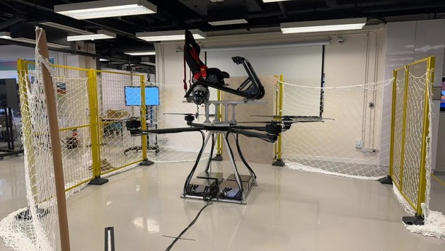
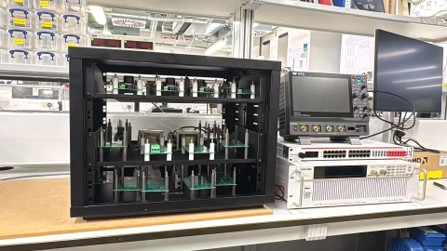
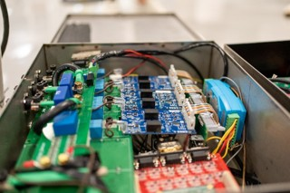
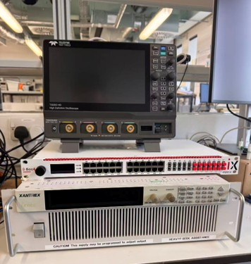

Advanced power electronics, electrified transportation, and intelligent control.
RESEARCH · VER 18
Depending on the resources used to generate electricity, electrification can reduce carbon dioxide (CO₂) emissions from the transportation, building, and industrial sectors. Addressing emissions from these sectors is critical to decarbonizing the economy and, ultimately, mitigating the impacts of climate change.
Our team aims to develop the electrification of transportation applications, which includes EV and aerospace motor control, wireless power transfer, DC–DC converters, advanced power converters, and intelligent control technologies.
The ultimate goal of our team is to develop highly efficient, renewable, and sustainable energy technologies that can contribute to replacing conventional fossil fuels, including coal, oil, and natural gas.

Advanced motor-drive technologies for electric vehicles and aerospace electrification, including high-performance machine control, sensorless operation, predictive control, and electrified propulsion systems.

Modular multilevel converter technologies for advanced motor drives, including modulation, energy management, capacitor-voltage control, circulating-current control, and high-power-density converter design.

High-frequency and high-power-density converter technologies based on GaN and SiC semiconductor devices, focusing on converter hardware, switching performance, thermal design, and system integration.

Advanced control and real-time implementation for power converters and electrical machines, including predictive control, sensorless control, model-free control, grid-forming control, and advanced modulation.